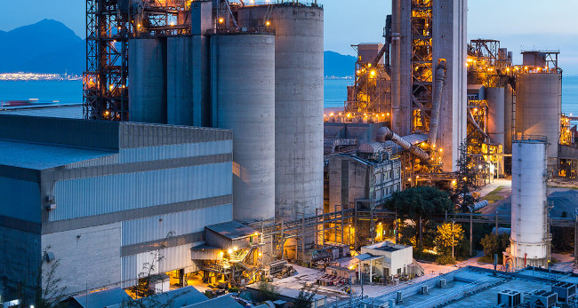

Industrialização no Brasil

Sumário
- O que é a industrialização?
- Quais os tipos de industrialização?
- Industrialização clássica
- Industrialização planificada
- Industrialização tardia
O que é a industrialização?
A industrialização designa o conjunto de transformações advindas do processo de criação de indústrias. Tal processo foi fruto da mudança de uma lógica predominantemente rural, voltada para as atividades primárias, para o desenvolvimento de um setor econômico baseado na produção de bens manufaturados. A industrialização é um processo heterogêneo cuja origem ocorreu na Inglaterra por meio da Primeira Revolução Industrial, mas que se dissipou pelo espaço geográfico mediante condicionantes diversos. A industrialização envolve questões econômicas, mas também políticas, sociais e ambientais.
Quais os tipos de industrialização?
A industrialização é um processo bastante heterogêneo que implica diversas especificidades, assim como condicionantes históricos, geográficos, econômicos, políticos e sociais. Sendo assim, as formas de industrialização que ocorreram no espaço geográfico mundial são agrupadas da seguinte maneira:
- Industrialização clássica:
- É o tipo ligado aos países desenvolvidos. Foi iniciada por meio do desenvolvimento de indústrias tradicionais a partir do da Primeira Revolução Industrial e tem uma continuidade baseada na modernização do espaço industrial por meio de indústrias de alta tecnologia. São países de industrialização clássica: Inglaterra, Estados Unidos e França.
- Industrialização planificada:
- Ocorreu por meio da forte atuação estatal no controle da economia. Sendo assim, está intimamente ligada aos países que adotam uma visão econômica socialista. Tem como marca a criação de indústrias estatais que proveem grande parte das necessidades da população. São países de industrialização planificada: Rússia, China e Cuba.
- Industrialização tardia:
- Está atrelada ao países ditos subdesenvolvidos, que entraram tardiamente no processo de industrialização mundial. A atividade agropecuária predominante nesses países retardou o desenvolvimento de uma indústria local. Ademais, tal cenário resultou em grande dependência dos países de industrialização clássica, nos campos econômico, financeiro e tecnológico.
Página 2